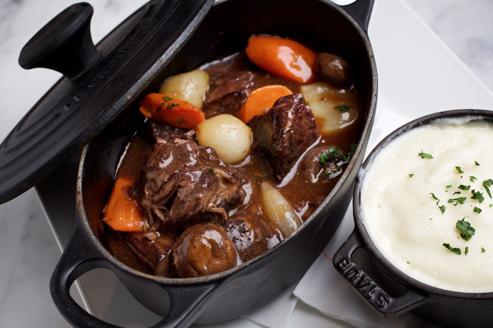
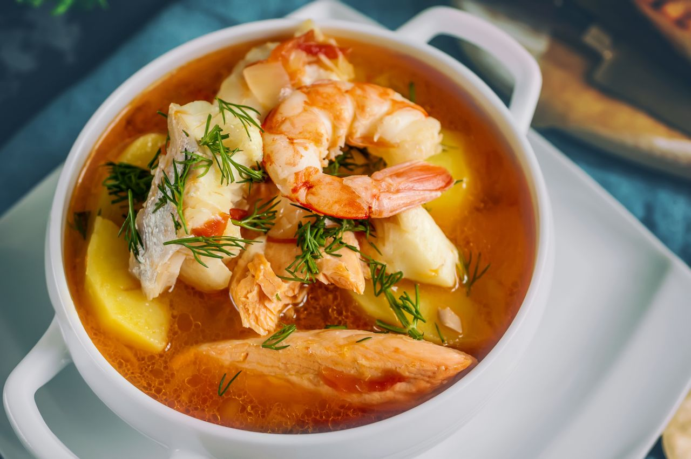
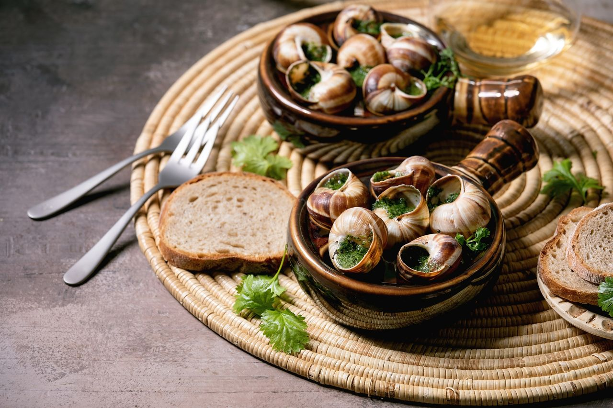
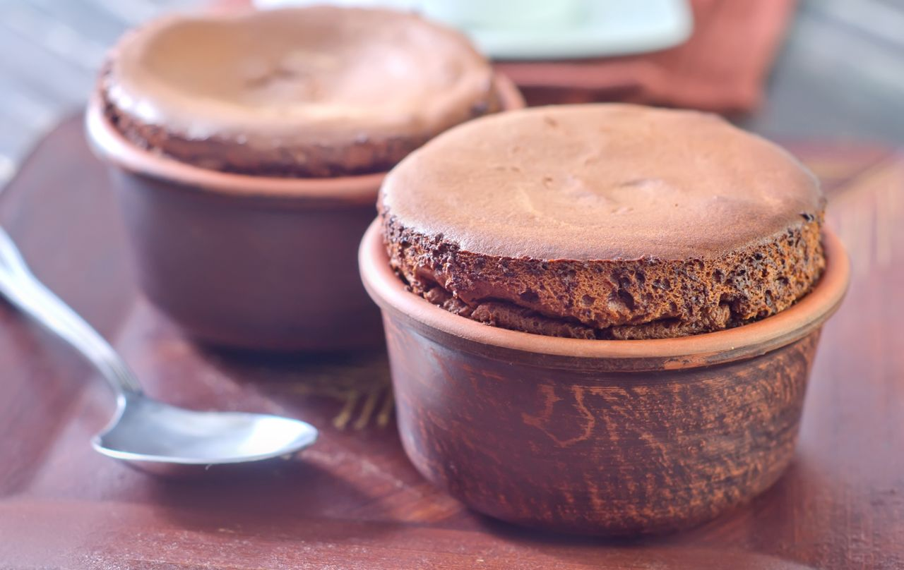

Boeuf Bourguignon
- Beef
- Dry pinot noir
- Fresh vegetables
Recipe
- Named boeuf Bourguignon after the famed red wine from the Burgundy region of France.
- This dish combines a nice, fatty cut of beef with a dry pinot noir and plenty of fresh vegetables to create a hearty and indulgent stew.
- It has been the focus of many discussions over which cuts of beef and types of wine create the best flavor profiles.
- But the most important ingredient for success is patience – like any good stew, boeuf Bourguignon is best when left overnight before serving.

Bouillabaisse
- Beef
- A topper of croutons dipped in rouille
- A peppery garlic sauce
Recipe
- Named boeuf Bourguignon after the famed red wine from the Burgundy region of France.
- This dish combines a nice, fatty cut of beef with a dry pinot noir and plenty of fresh vegetables to create a hearty and indulgent stew.
- It has been the focus of many discussions over which cuts of beef and types of wine create the best flavor profiles.
- But the most important ingredient for success is patience – like any good stew, boeuf Bourguignon is best when left overnight before serving.

Escargot
- Rich,buttery flavor bread.
- Burgundy snail
- A peppery garlic sauce
Recipe
- Escargots are perhaps one of the most famous – or infamous, depending on who you ask – French dishes around.
- The classic recipe involves snails with parsley and garlic butter.
- These aren’t your average backyard snails either.

Chocolate soufflé
- Bread
- A topper of croutons dipped in rouille
- A peppery chocolate sauce
Recipe
- Aptly named after the French term souffler, meaning “to puff up,” the experience of eating a chocolate soufflé or one of its savory counterparts is a bit like biting into a cloud.
- Though notoriously difficult to prepare, the soufflé has a relatively simple ingredient list.
- The distinctive airy texture comes from separating the egg whites from the yolk and whipping them into a stiff meringue before folding them back into the chocolate batter.
